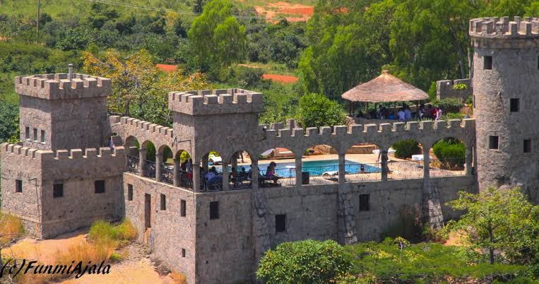
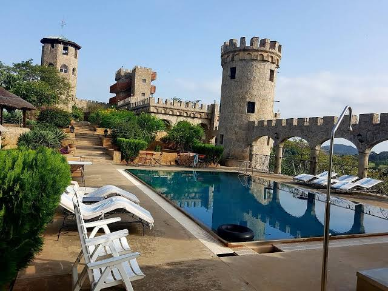
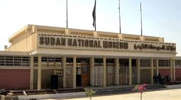
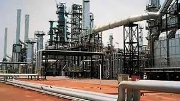

Introduction
Located in the north-central region of Nigeria, Kaduna State is often referred to as the "Centre of Learning" due to its numerous educational institutions. Established in 1967, Kaduna has grown to become one of the most diverse and historically significant states in Nigeria. Its capital, Kaduna, is a bustling city that blends modernity with rich cultural heritage.
Geography and Climate
Kaduna State is bordered by several states, including Kano, Katsina, and Plateau. The state's terrain is a mix of plains and highlands, with the prominent Jos Plateau to the east. The climate is generally tropical, with distinct wet and dry seasons. The rainy season runs from April to October, while the dry season spans from November to March.
Culture and People
Kaduna is home to a wide variety of ethnic groups, including the Hausa, Fulani, Gwari, and many others. This diversity is reflected in the state's rich cultural traditions, festivals, and languages. The Durbar Festival, celebrated during Eid, is one of Kaduna's most colorful and significant cultural events, showcasing traditional horse riding, music, and dance.
Economic Activities
Kaduna State is a key player in Nigeria's agricultural sector, producing a variety of crops such as cotton, groundnuts, and maize. The state also has a growing industrial sector, with textile mills, oil refineries, and a burgeoning service industry. Kaduna’s strategic location as a transportation hub in northern Nigeria enhances its economic significance.
Tourist Attractions
There are several tourist attractions in Kaduna State that draw visitors from across Nigeria and beyond. The Kajuru Castle, a European-style medieval castle located in the Kajuru Local Government Area, is one of the most unique landmarks in the state. The Nok Village, famous for its terracotta sculptures dating back to 500 BC, offers a glimpse into ancient African civilizations. Additionally, the Lord Lugard Footbridge and the Kaduna National Museum are must-see historical sites.
Education and Innovation
Known as the "Centre of Learning," Kaduna State is home to several prestigious educational institutions, including Ahmadu Bello University, one of the largest universities in Nigeria. The state also hosts numerous research institutes, polytechnics, and colleges, contributing significantly to education and innovation in Nigeria.
Kjuru Castle
 Kajuru Castle, located in Kaduna State, Nigeria, is a unique and historical site known for its medieval-style architecture and stunning surroundings. It was built in 1989 by a German expatriate, Gerhard Huebner, and is set atop a hill in the town of Kajuru, about 45 kilometers from the city of Kaduna.Visiting Kajuru Castle offers a rare opportunity to experience a slice of medieval Europe in the heart of Nigeria, combining history, luxury, and adventure.
Kaduna museum

The Kaduna Museum, located in the city center, offers a glimpse into the rich cultural heritage of the region through its diverse collection of artifacts and exhibits..
The Kaduna Refinery:
one of the largest in the country, plays a significant role in the local economy, contributing to both employment and the city’s economic output. Additionally, Kaduna’s proximity to major agricultural areas supports its role as a trading hub for agricultural products, including grains, livestock, and vegetables
Conclusion
Whether you're interested in exploring Nigeria's rich history, engaging in cultural experiences, or pursuing educational opportunities, Kaduna State offers a unique blend of all these elements. Its diverse population, historical sites, and strategic importance make it a key destination for visitors to Nigeria.